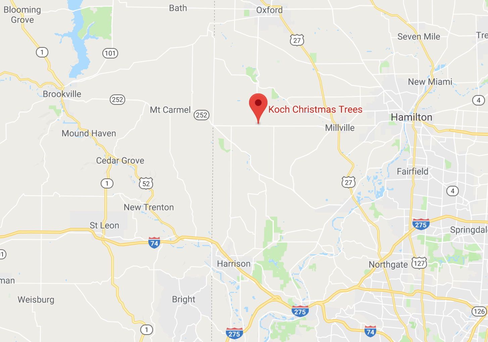

Directions
The farm is in Butler County, Ohio, just north of Cincinnati. We are in rural Reily Township, about four miles from the Indiana state line.
Koch Christmas Trees6232 Hamilton-Scipio Road
Okeana, Ohio 45053
Because our farm is located on a ZIP code boundary, your GPS may need the ZIP code changed to 45056 (Oxford) or 45013 (Hamilton).

From Cincinnati
Take Route 27 (Colerain Avenue) north into Butler County through Ross and to Millville. At the first light in Millville, go west on Ohio Route 129 approximately eight miles to the farm, on the corner of Route 129 and Route 732.
From Hamilton
Go through Millville on Route 129. The farm is eight miles past Millville on the right, on the corner of Route 129 and Route 732.
From Oxford
Take Route 732 south until it dead ends at Route 129, about three miles south of Reily. The farm is on the left.